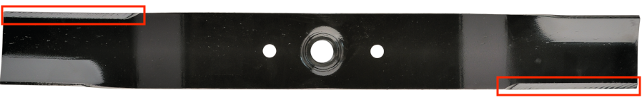
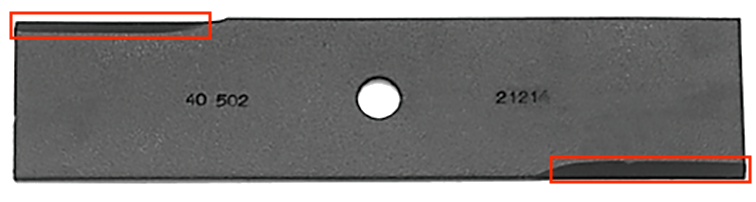

|
|
|
Lawn Mower & Lawn Edger Blades |

Edge Angle
|

Lawn Mower Blade On Lawn Mower blades, sharpen the upper side of the blade's leading edge. The areas to be sharpened are highlighted in red. |
|

Lawn Edger Blade On Lawn Edger blades, sharpen the side of the blade which is the leading edge. The areas to be sharpened are highlighted in red. |
|
When the world wearies and society fails to satisfy, there is always the garden. Minnie Aumonier |
Care must be taken to ensure the blade remains balanced (i.e., ensuring that the removal of metal during the sharpening is equal on both sides). For this reason (and many others), it is highly recommended to perform the sharpening of the blade after removing it from the mower or edger.
|
General Guidelines |
|
| α |
Notes |
|---|---|
| 30° |
If using a Tormek to sharpen this blade, the SVM-45 Knife Jig can be used, but I'd recommend using the SVD-110 Tool Rest. The Lee Valley Rotary Mower Sharpener sharpens blades at 25°. |
New blades probably will not need reshaping. However, if a nick is in the edge, this may be needed.
If you use an angle grinder, consider using a 120 grit flap disc. A metal grinding wheel may be needed for large-scale shaping. In either case, be sure to not overheat the metal too much: it weakens the metal.
Use a machinist’s hand file.